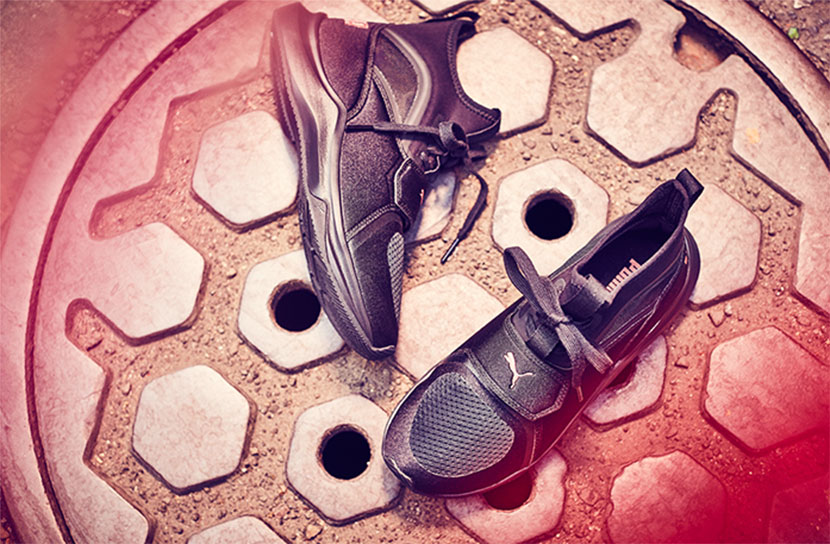

INTRODUCING PHENOM WORN BY SELENA GOMEZ.

INTRODUCING PHENOM WORN BY SELENA GOMEZ.
The Phenom is a high-intensity training shoe packed with serious specs. Engineered for optimal traction, stability, quick response and manoeuvrability, their lightweight construction and soft, snug collar provide superior comfort on longer runs. They also happen to look adorable. We couldn’t help ourselves.
IGNITE foam: Soft, cushioning comfort and outstanding grip for quick turns and